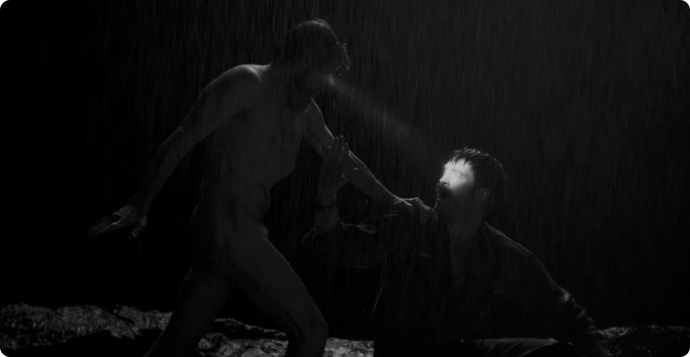

Изоляция как катализатор

Главное, что делает фильм таким тревожным — это полное отрезание персонажей от внешнего мира. Время и пространство сжимаются до острова, а шторм не даёт выйти за его пределы. Психика теряет привычные ориентиры:
- социальные нормы исчезают;
- ощущение времени размывается;
- внутренние противоречия только усиливаются.
Персонажи остаются наедине с собой и своими страхами, желаниями, подавленностью. Уже не к кому обратиться, чтобы проверить реальность.
Власть и подавление


Отношения между героями — это не просто столкновение характеров, а своего рода модель власти и подчинения. Старший смотритель жёстко контролирует младшего, лишая того даже управления простой частью жизни. Унизительные поручения, постоянная критика, запрет смотреть на свет маяка — всё это действует не только как раздражитель, но постепенно разрушает личность. Младший начинает сомневаться в себе, своих воспоминаниях, в адекватности восприятия.

Потеря границы реальности
Самый интересный момент — это стирание границ между реальностью и воображением. Галлюцинации и странные видения становятся частью обычного восприятия, они перестают отличаться от реальных событий. Этот художественный приём отражает состояние психики: подавленные желания пробиваются наружу, вина и страхи принимают конкретные формы, сознание утрачивает способность фильтровать окружающий мир. Зритель, как и герой, оказывается в ловушке, где невозможно понять, что происходит на самом деле.

Стоит отметить, что безумие здесь не приходит внезапно. Оно — итог цепочки событий: изоляция ведёт к давлению, давление подрывает контроль, и в итоге личность распадается. Конец фильма можно интерпретировать по-разному, но он не оставляет сомнений в одном — стремление приблизиться к свету, символу знания или власти, заканчивается разрушением.

Вывод
В итоге «Маяк» рассказывает не про слабость отдельных людей, а про то, что происходит с любой психикой, оказавшейся в похожих условиях. Безумие здесь — скорее ожидаемый итог, чем случайность. Возможно, именно эта мысль оставляет после просмотра такое тяжёлое чувство, ведь в такой ситуации может оказаться кто угодно.
